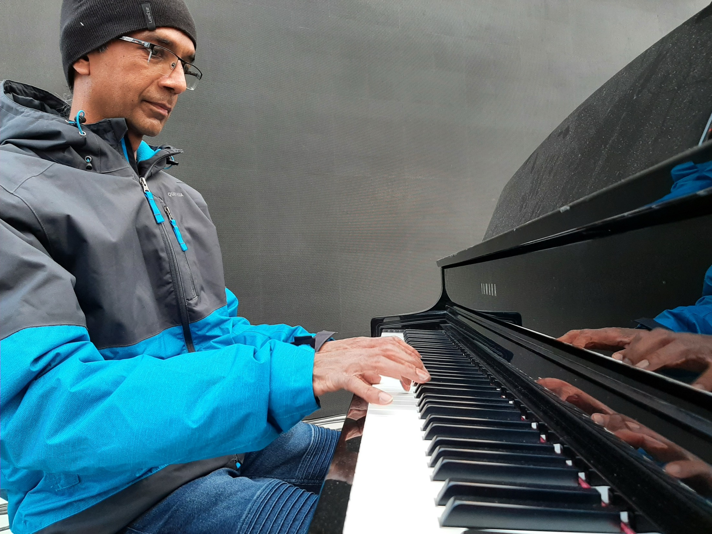
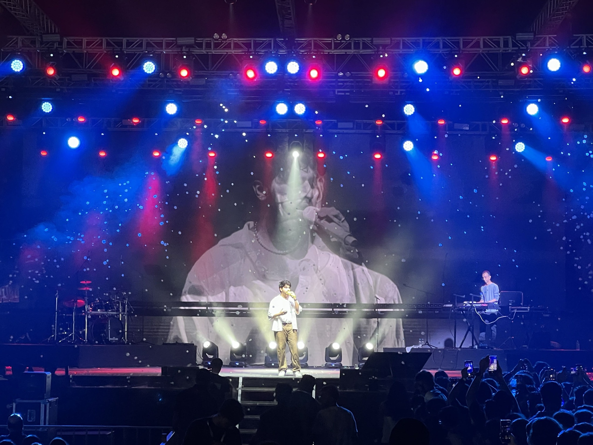
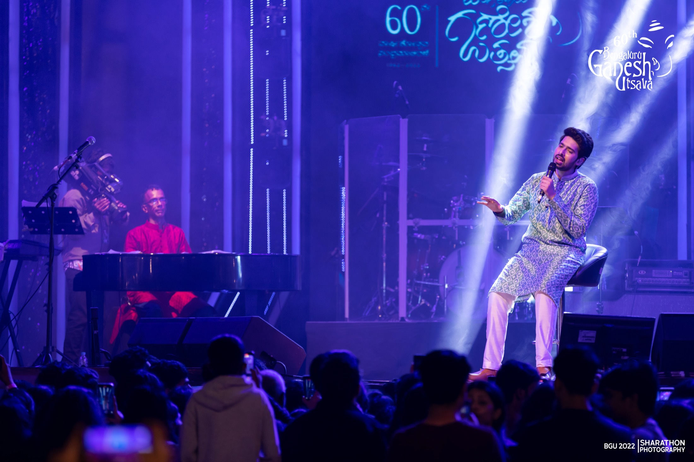

Armaan Malik
Bollywood
Auckland, New Zealand
Keyboardist · Music Programmer · Session Pianist
30 Years Performing Across The World
Live Performance
From intimate jazz clubs to sold-out arenas — delivering consistent, professional performances night after night, for every audience, on every stage.
The Journey
Three decades of musical evolution across continents, genres, and generations.
Classical training instilled discipline, precision, and a commitment to preparation that would define every professional endeavour to follow.
Recording studios across multiple cities — collaborating with artists, producers, and directors, meeting tight deadlines, and delivering quality results under real professional pressure.
Joining world-class touring productions — managing technical responsibilities, coordinating across time zones with large crews, and delivering sold-out shows with precision and reliability every single night.
Performing alongside Shaggy, Deep Purple, Indian Rock Band 13AD, Armaan Malik, Adnan Sami, Jonita Gandhi, Shirley Sethia and part of Channel V band with Jules Fuller and Sophia Haque and more — earning a reputation as a reliable, professional, and deeply collaborative team player valued at the highest levels.
Based in Auckland, New Zealand — bringing three decades of international professional experience to every opportunity, with warmth, adaptability, and an enduring work ethic.

The Artist
With over 30 years of professional experience, Bosco brings a rare combination of discipline, adaptability, and technical mastery to every project — musical or otherwise.
From studio recordings to arena tours, Bosco shows up prepared, focused, and committed to excellence every time — the hallmark of a consummate professional.

Touring Life
International concert tours have taken Bosco across Asia, Oceania, and beyond. As a trusted touring musician and music programmer, he has delivered world-class live productions under pressure — coordinating with crews, adapting to unexpected challenges, and bringing the same discipline, reliability, and professionalism to every performance, every single night.

Concert Stage
Shared Stages
Artists Bosco has shared the stage with across decades of world-class performances.
— drag to spin —
Expertise
A complete command of music production, live performance, and the professional skills that three decades of international touring demand.
Industry-standard DAW for live performance sequencing, triggering, and real-time production.
Professional studio recording, arrangement, and production across all genres and formats.
Three decades on stage — from intimate venues to international arena tours with world-class artists.
Versatile keys across Jazz, Classical, Pop, Bollywood, Reggae, R&B, and Fusion.
MIDI sequencing, synthesis design, and full arrangement programming for live and studio contexts.
Backline setup, show logistics, and technical coordination across international touring productions.
Proven record working alongside legendary artists, music directors, and production teams worldwide.
Fast, calm resolution of sound, equipment, and show challenges — keeping every performance on track.
Thousands of audience and team interactions across decades — reading the room, building rapport, and communicating clearly across cultures and contexts.
International touring demands seamless cooperation with production crews, artists, and event teams — building trust quickly and contributing under high-stakes conditions.
Thirty years of live performance made reliability non-negotiable. Every commitment is honoured, every deadline met, every team member can count on the job being done right.
Every stage, city, and team is different. Three decades of touring built the ability to read new environments quickly and deliver outstanding results regardless of changing conditions.
About
Bosco Fernandez is an Auckland-based professional whose three-decade career in live performance, international touring, and studio work has cultivated exceptional discipline, communication, adaptability, and an uncompromising commitment to reliability.
A life in music demands punctuality, teamwork, the ability to perform under pressure, and genuine care for every person in the room. From Jazz and Classical to Pop, Reggae, and Bollywood — Bosco brings these qualities to everything he does.
The Musician
A career defined by dedication, discipline, and genuine passion — from the first note to the last encore, on stages across the world.
Performance Archive
Click a link below to watch, or copy and paste it into your browser.
Get In Touch
Open to professional opportunities, collaborations, performances, and projects of all kinds. Based in Auckland — reliable, adaptable, and ready to contribute with enthusiasm and expertise.
"Music Connects
Every Journey"
Bosco Fernandez
© 2026 Bosco Fernandez — Auckland, New Zealand